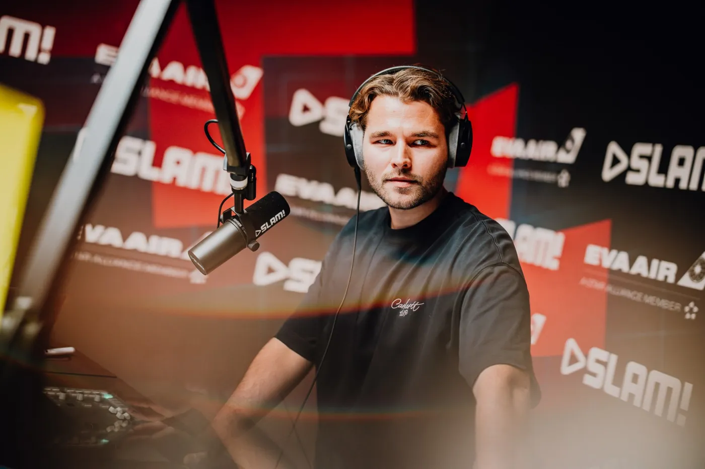
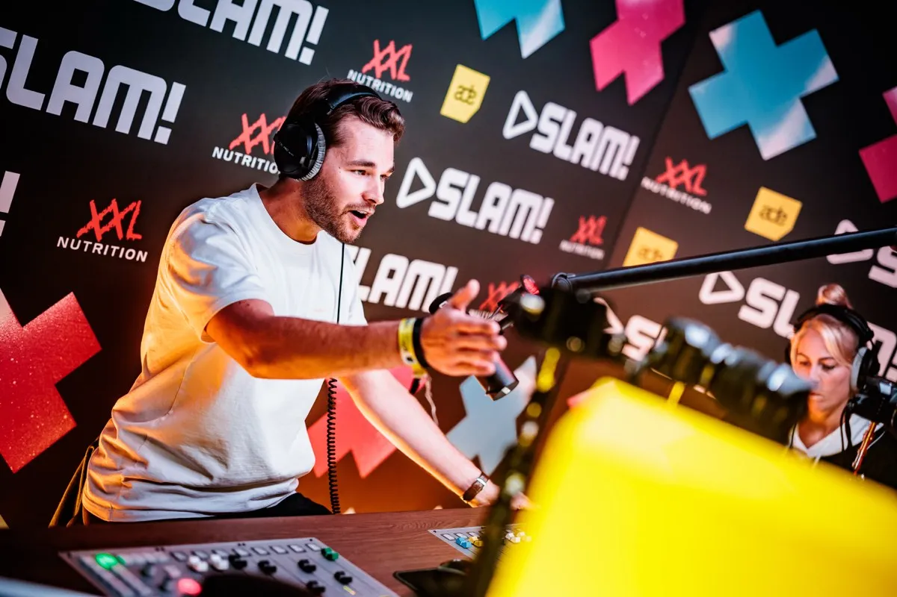
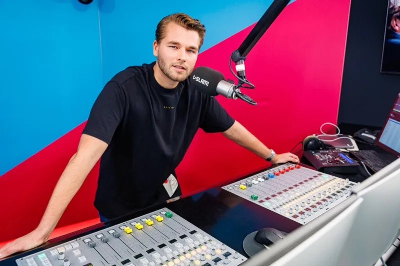

Het begon op de radio.
Ik ben vooral een creatief. Ik vertel verhalen, met woorden en met muziek. Van maandag tot en met donderdag live op SLAM!.
Verhalen vertellenElke uitzending is een verhaal. Wat vertel je, wanneer, en hoe neem je mensen mee?
Leven in de muziekAchter de draaitafel bouw ik een set op en voel ik wat een zaal nodig heeft.
Een creatief in de kernIdeeën bedenken en ze maken. Daar krijg ik energie van, op de radio en daarbuiten.


